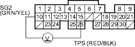
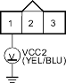
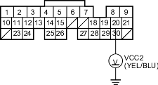

DTC 7:TP Sensor Circuit Malfunction
- Reset the ECM/PCM (see page 11-168).
- Start the engine.
Is the MIL on and does it indicate DTC 7?
YES |
- Go to step 3. |
NO |
- Intermittent failure, system is OK at this time. Check for poor connections or loose wires at the TP sensor and at the ECM/PCM. |

- Turn the ignition switch OFF.
- Turn the ignition switch ON (II).
- Measure voltage between ECM/PCM connector terminals A10 and A15.
NOTE: There should be a smooth transition as the throttle is pressed.

Is the voltage about 0.5 V at full close throttle, and about 4.5 V at full open throttle?
YES |
- Substitute a known-good ECM/PCM and recheck. If symptom/indication goes away, replace the original ECM/PCM. |
NO |
- Go to step 6. |
- Turn the ignition switch OFF.
- Disconnect the TP sensor 3P connector.
- Turn the ignition switch ON (II).
- At the engine wire harness side, measure voltage between the TP sensor 3P connector terminal No. 1 and body ground.

Is there about 5 V?
YES |
- Go to step 11. |
NO |
- Go to step 10. |
- Measure voltage between ECM/PCM connector terminals A20 and body ground.

Is there about 5 V?
YES |
- Repair open in the wire between the ECM/PCM (A20) and the TP sensor. |
NO |
- Substitute a known-good ECM/PCM and recheck. If symptom/indication goes away, replace the original ECM/PCM. |